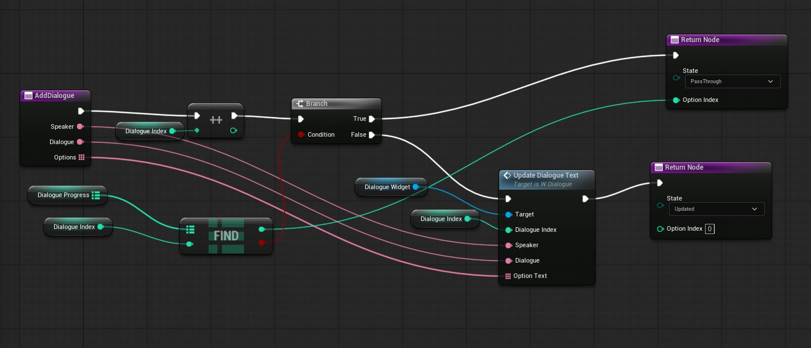
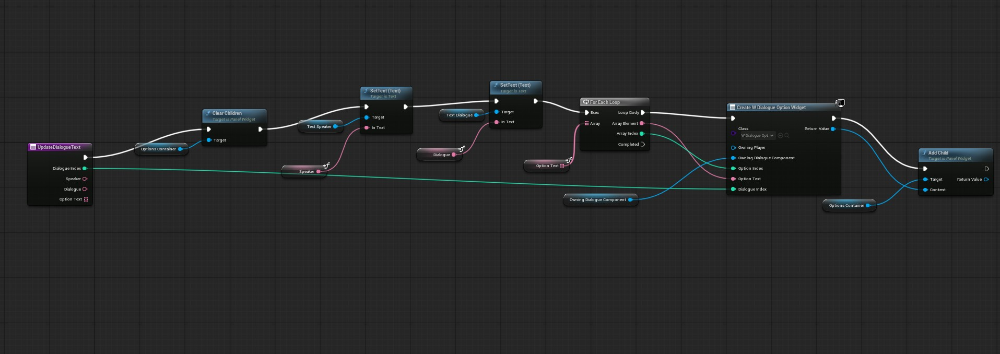
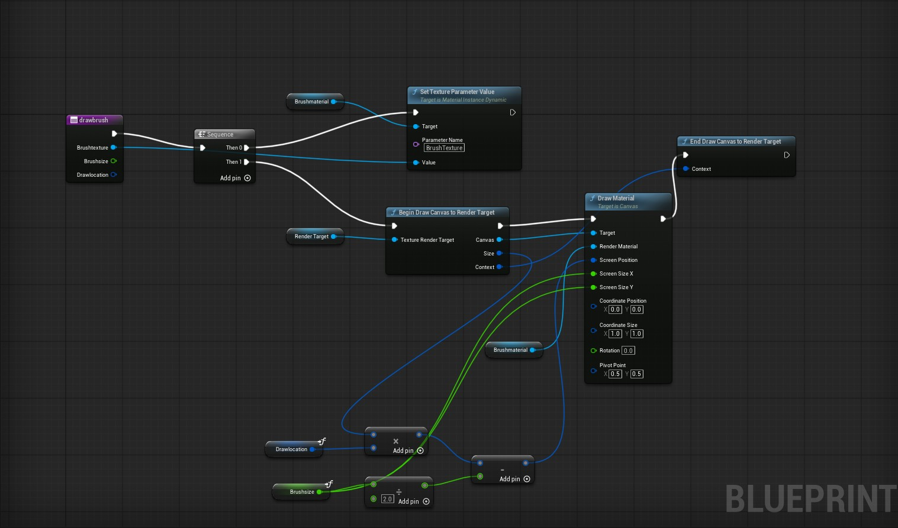

Itch.io Game Download
Buggin' Out Game
Techical Information
Game Overview
Overview
Buggin' Out is a Unreal Engine game that I created in two weeks from the Valentines Day SkillUp Game jam https://itch.io/jam/valentines-skillup-game-jam. I unforntunately did not understand the exporting process and missing the deadine. But the majority of the game was built in two weeks. It is a casual rpg fitting the jams theme of death is not the end. The main character dies after a stressful work event and is reincarnated by death itself as a bug. Through island exploration and relaxing mini games the main character learns to enjoy life and relax. I used this game jam to learn Unreal Engine 3D and starting learning Blueprints. I only used free to use assets from the FAB store.
Credits
Nicolette Vere - Gameplay programmer in Unreal Engine with Blueprints, drew video assets in Adobe Fresco, video editor with ShotCut, designed gameplay and world, everything except the music.
Music written, played, and produced by Jonathan Hanson
Technical Information
Tech Stack
Unreal Engine 3D using Blueprints, Shotcut for video editing, and Adobe Fresco for opening video asset drawing.
Technical Breakdown
Dialogue System
I needed a reusuable system to easily make all NPCs interactable with dialogue. So I created a resuable dialogue system using Bluerprints, guided by videos by Michael Pattison. NPCs could override the dialogue function and have thier individual dialogue tree options without needing to redo any base logic. I used this system for all NPCs in the game.

In this example the Death character NPC is overrides the base dialogue function which is empty. Then addDialogue is used to display dialogue from the speaker Death and display response options for the player to say. Once a player clicks on an answer associated with an number, the new new stage of the dialogue is shown based on the response using SwitchOnInt.

The function addDialogue works by keeping track of a value stored in dialogue index. As more dialogue is added that number is increased. It is then compared to dialogue progress had one added to it each time the dialogue progresses. This check allows for if this dialogue has already been said for it it be skipped and if it has not yet been said for UpdateDialogueText to be called.

The function updateDialogueText updates the dialogue Widget that appears on screen to display the dialogue and options. It clears out any current dialogue and dialogue options children within the dialogue widget, displays the new speaker dialogue text, and then creates new dialogue options for each of the new ones within the options. Overall, this uses two Widgets W_Dialogue and W_DialogueOptions.
Painting System
Another interesting system I built, guided by videos from UnrealUniversity, was the canvas painting system for the painting minigame. For this minigame I wanted the player to be able to select paint cans to change their brush color and hold down a button while pointed at a canvas to paint with that color.

After talking to the Painting Spider NPC, the paintbrush widget is added to the viewport. Now with a right mouse click on the paint can actors, the color of the brush will be updated. When the paint can actor that has its associated color name is clicked the brush texture 2D texture variable is updated to match with the associated color. The GetForwardVector componenet with an input of 1500.0 allows for the actor paint can to be clicked for a far away distance so they do not have to fly super close to the can to change colors.

Then with a left mouse click if the brush is pointed at the canvas actor the brush color will be painted onto the canvas at the location the brush is pointing.
